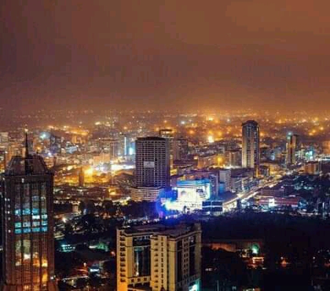

Nairobi is Kenya’s capital city. In addition to its urban core, the city has Nairobi National Park, a large game reserve known for breeding endangered black rhinos and home to giraffes, zebras and lions. Next to it is a well-regarded elephant orphanage operated by the David Sheldrick Wildlife Trust. Nairobi is also often used as a jumping-off point for safari trips elsewhere in Kenya.
